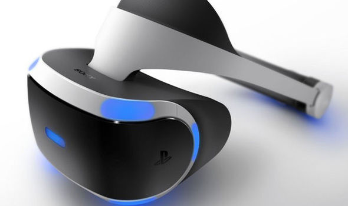
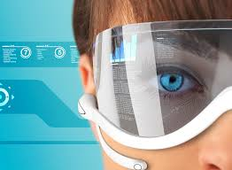

What is Virtual Reality? Virtual reality (VR) is the computer-generated simulation of a three-dimensional image or environment that can be interacted with in a seemingly real or physical way by a person using special electronic equipment, such as a helmet with a screen inside or gloves fitted with sensors.
How can we experience Virtual Reality? Virtual reality today can be experienced through a variety of wearable devices. Headsets are made by a variety of manufacturers: Oculus, Sony, HTC, Samsung and Google. These usually require three things.  First is a device to run the VR application, this can be a PC, console or smartphone. Second is a headset which secures a display in front of your eyes. Third is some kind of input, this could be controllers, voice, hand tracking, head tracking, on device buttons or trackpads. This is really the initial phase because even though you have entered your own private world, it’s hard to actually escape reality.
What is the future of Virtual Reality? The path that VR designers and manufacturers are working toward is a total immersion experience. Something so real that the user will forget the hardware surrounding them, and act as if it were a real, alternative world.
Virtual Reality vs Augmented Reality Virtual reality technology facilitates the creation of real-life simulations, and creates an immersive experience for any user that makes them feel as if they are actually interacting with their digital environment. Augmented reality, on the other hand, layers digital enhancements geared to enrich an existing real life setting by appealing to the senses.